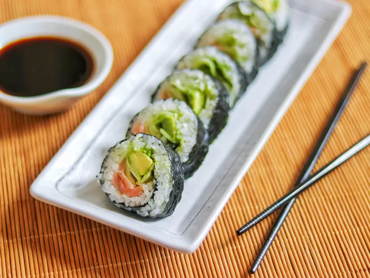

Sushi

Description
Sushi is a Japanese dish of seasoned rice, vegetables, egg, or raw seafood served cold and wrapped in a thin sheet of seaweed.
The rice is flavored with vinegar and the dish is often garnished with nori, shredded egg, and salmon. Sushi can have a strong flavor that's neutral, tangy, and sweet, and different types of sushi can use different ingredients.
Ingredients
- 2 cups Japanese sushi rice.
- 6 tablespoons rice wine vinegar.
- 6 sheets nori (dry seaweed).
- 2 tablespoons wasabi paste.
- 8 ounces smoked salmon, cut into long strips.
- 1 cucumber, peeled and sliced.
- 1 avocado - peeled, pitted and sliced.
Steps
- Soak rice for 4 hours. Drain rice and cook in a rice cooker with 2 cups of water. Rice must be slightly dry as vinegar will be added later.
- Immediately after rice is cooked, mix in rice wine vinegar; spread rice on a plate until completely cool.
- Place 1 sheet of seaweed on a bamboo mat; press a thin layer of cool rice on seaweed, leaving at least a 1/2 inch top and bottom edge of the seaweed uncovered.
- Dot some wasabi on rice; arrange smoked salmon, cucumber, and avocado on rice about 1 inch away from the bottom edge of seaweed.
- Slightly wet the top edge of seaweed; roll up tightly from the bottom to the top edge with the help of the bamboo mat. Cut salmon roll into 8 equal pieces and serve. Repeat for other rolls.